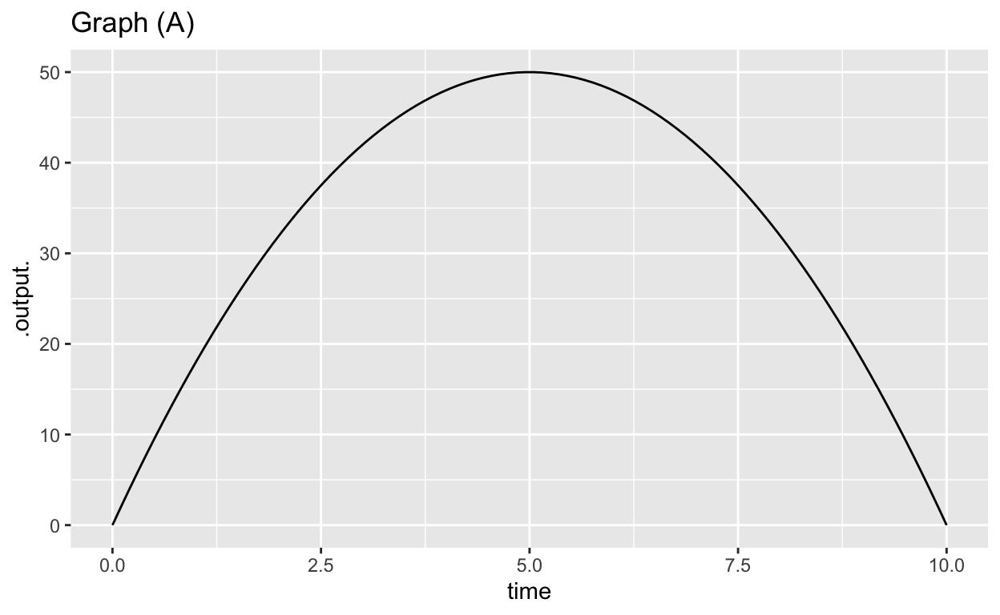
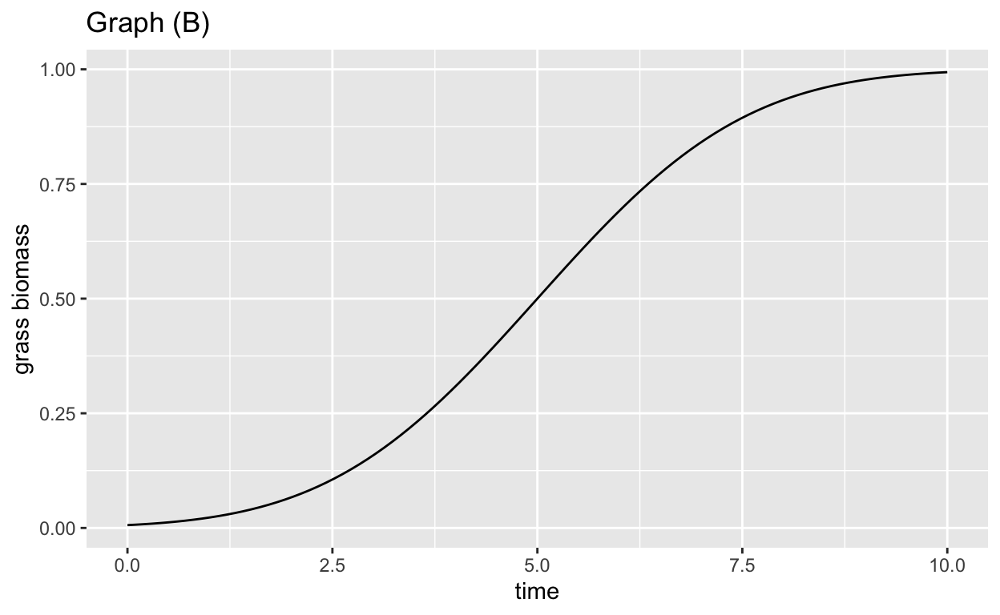
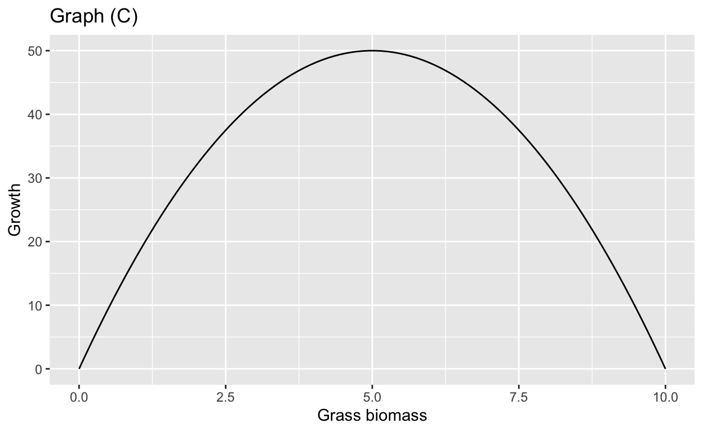
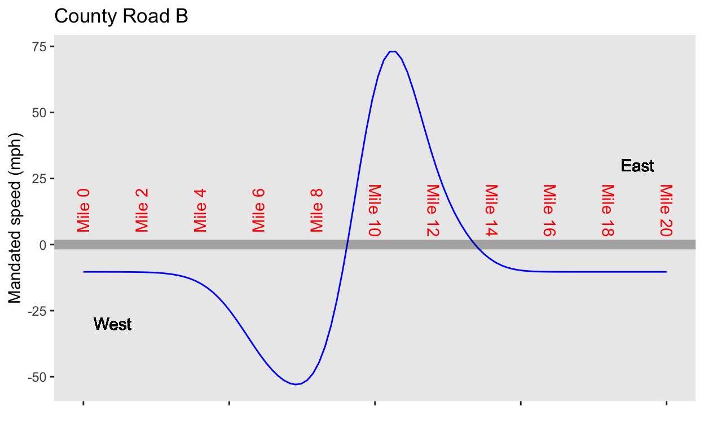

Understand that describing continuous-time phenomena means that the state is treated as instantaneous and that the motion is based on derivatives instead of finite differences.
Recognize the importance of the exponential solution as fundamental to motion near fixed points.
A familiar task from high-school math is to “solve” an equation. For instance, if given the equation \(a x^2 + b x + c = 0\) and asked to “solve for \(x\),” you might remember to invoke some procedure such as the quadratic formula:\[x = \frac{1}{2a}\left[-b \pm \sqrt{\strut b^2 - 4 a c}\right]\] From experience, you would know that \(x\) will be a number (although the situation gets a little sketchy when \(4ac > b^2\)).
In CalcZ, rather than emphasize “equations,” we’ve built on the notion of functions. For instance, in the language of calculus, we would define a function such as \(f(x) \equiv a x^2 + b x + c\). The task of “solving” is re-framed as “finding a zero of \(f(x)\),” that is, finding a value \(x_0\) for which \(f(x_0) = 0\). A similar sort of task is “finding an argmax of \(f(x)\).” This means to find an \(x^\star\) such that \(f(x^\star) \geq f(x)\) for all \(x\). We have used several notations, e.g. \(x_0\), \(x^\star\), etc., to indicate that a task is to find a specific numerical value that, when put as an input to a function, gives an output that has some specified property, e.g. the output is zero or the output is maximized.
We have also studied operators that, when given a function as input, produce as output another function. The most famous of these are differentiation and anti-differentiation.
With finite-difference equations, we have returned to mathematical objects in the form of equations, and to the task of solving. For instance, a one-dimensional finite-difference equation looks like \[x_{n+1} = f(x_n)\] The equation sets the relationship between the future (\(n+1\)) state and the present (\(n\)) state. To find a solution to the finite-difference equation does not mean finding a numerical value for \(x\). Instead, it means finding a function \(x_n\) that satisfies the relationship specified by the equation.
Calling \(x_n\) a “function” drops (for good reason) some conventions we have used throughout the course:
Differential equations—as opposed to difference equations—also involve an equation. As we start out, that equation will involve three different functions, typically a function of time \(g(t)\), the derivative \(\partial_t g(t)\) of that function with respect to time and still another function \(\mbox{dynamic}()\). So a differential equation might look like \[\underbrace{\partial_t g(t)}_\mbox{function 3} = \underbrace{\mbox{dynamic}}_\mbox{function 2}(\ \underbrace{g(t)}_\mbox{function 1}\ )\]
The equation mandates a particular relationship between the functions \(g(t)\) and \(\partial_t g(t)\). To solve this equation means to find a particular function \(g(t)\) that is faithful to the mandate set by the equation. And, of course, whatever \(g(t)\) is, \(\partial_t g(t)\) is its derivative with respect to time.
As a form of contrast, consider this equation: \[\partial_t g(t) = \sin(\omega\, t)\] We already learned a technique to solve such an equation, namely take the anti-derivative with respect to time of both sides: \[g(t) + C \equiv \int \partial_t g(t) dt = \int \sin(\omega t) dt \equiv - \frac{1}{\omega} \cos(\omega\, t) + D\]
Notice that I’ve used \(\equiv\) in two places in the above line. To say \(\partial_t g(t) = \sin(\omega t)\) is to impose a mandate. This won’t be true for any \(g(t)\) that comes along, the equation is giving specific information about what kind of function \(g(t)\) has to be. One the other hand, \(g(t) - C \equiv \int \partial_t g(t) dt\) is something that has to be true for any \(g(t)\) that someone happens to provide. Similarly, \(\int \sin(\omega t)dt \equiv - \frac{1}{\omega} \cos(\omega\, t) + D\) is a mathematical fact, not a modeling statement about the world.
In a differential equation, the unknown function \(g(t)\) appears on both sides of the equation, once in the form of \(\partial_t g(t)\) (“function 3”) and once as \(g(t)\) (“function 1”). Although it’s tempting to apply anti-differentiation, that will not do the job of finding \(g(t)\), since \(g(t)\) itself appears as part of the broader function \(\mbox{dynamics}(\ g(t)\ )\) to which we’re tempted to apply anti-differentiation.
We will need other approaches to solve the differential equation for \(g(t)\). We will use two good approaches, one that always works (for any function \(\mbox{dynamics}()\) and the second that only works sometimes.
Interestingly, traditionally calculus courses have featured a third method for solving differential equations:
Differential equations are often written in a kind of shorthand which makes it easier for those in the know but can be confusing to newcomers. We’re going to use that shorthand since you will encounter it in your downstream courses. But we want to lay it out in parallel with the highly explicit notation we have been using thus far.
The differential equation in the previous exercise is \[\partial_t g(t) = 0.2 g(t) \left(1 - g(t)/200\right)\] The shorthand makes some substitutions:
Let’s write it a little bigger to be sure you can spot it:
In the shorthand the equation is rendered
Although we’ve saved having to write \((t)\) multiple times and having to write \(\partial_t\) at all, until you get used to it you will forget that \(t\) has anything to do with \(\dot{x} = 0.2\, x\ (1-x/200)\). Keep your eyes out for that little speck of a dot, \(\dot{\ }\), because it is the only thing to remind you about the essential role of \(t\) as the input to the sought-after \(x(t)\).
There are a few differential-equation forms that show up again and again in modeling problems. We’re going to introduce them to you here and, later, show you the solutions.
The proportional growth/decay model: \(\dot{x} = a x\)
Change proportional to difference: \(\dot{x} = - a (x - x_\mbox{fixed})\)
Limited growth, e.g. \(\dot{x} = r x (1-x/k)\)
The proportional-growth model will lead to \(x(t)\) increasing without limit. Sometimes that’s a good model over short times, before \(x(t)\) has a chance to get unrealistically big. But over long periods of time, something’s gotta give.
This section makes use of the following app:
Click on the picture of the app and it will open in a new browser tab. Arrange that new tab side-by-side with the one where you are reading this.
To solve a differential equation with the Euler method, you need two things:
You will also need
How Euler works The first row of the table shows the situation at \(t=0\). At that time, the value of \(x\), that is \(x(t=0)\) is the initial condition that you set with the slider.
In the following, whenever we write \(x(t)\) we mean \(x\) at the time in the last row of the table.
Select \(\partial_t x = -0.5 x\) as the differential equation to solve. Press “step” several times. After each step, try to understand from the table and graphs why the new row added to the table is what it is.
Consider a hay field that has just been harvested in the middle of summer. The grass has been cut short and the weather is still conducive to growth. What’s going to happen?
The grass will grow back, a very simple model of which will be \(\partial_t G(t) \equiv C\). This rate, \(\partial_t G(t)\), corresponds to the grass growing back at a constant rate. Imagine we measure this rate as tons of biomass per day, and measure time \(t\) in days.
There are two obvious shortcomings of the model \(\partial_t G(t) = C\). First, when the amount of grass is very small (think little spouts spread widely apart) growth should me smaller than when the grass is plentiful. Second, at some point the grass is so dense that further growth is impossible, so \(\partial_t G(t)\) falls to zero (or even negative). The maximum amount of biomass that can be sustained by the field is called the grass’s carrying capacity.
The standard simple model for a system with growth to a carrying capacity is \[\partial_t G(t) = r G(t)(K-G(t))\] This model is famous and has a name: logistic growth.
Here are three graphs.

You and your older cousin are on a road trip. She rented a car that has not only “cruise control” (a technology from the 1970s that holds a constant speed without driver intervention) but also “car following,” that keeps the car a set distance \(D\) behind the car in front. Your cousin, knowing that you are a CalcZ student, asks you how the “car following” system works.
First, define some terms. You tell your cousin to denote the current, instantaneous distance from the car ahead as \(\xi\). You point out that when \(\xi - D > 0\), you’re a greater distance than \(D\) from the car ahead and therefore the velocity should be increased so you catch up. On the other hand, when you’re too close (\(\xi < D\)) you should decrease your velocity. The car-following system automates this, the relationship being \(\partial_t \xi = b (\xi - D)\).
Your cousin has never encountered a name like \(\xi\) so you decide to simplify. “Let \(x = \xi - D\), so \(x\) is positive if you are too far behind, zero when you’re at the right distance, and negative if you are too far ahead.” Conveniently \(\partial_t x = \partial_t \xi\), so you can write down the automatic relationship in terms of \(x\): \(\partial_t x = b x\) with \(b\) a positive number, such as 1.
Something’s wrong with the system you’ve sketched out. You want a stable following distance, doing the right thing if the car ahead speeds up or slows down, but your system is unstable.
The word “feedback” is used to describe systems where the change in the state is a function of the state. “Negative feedback” is when the change is negative when the state is positive, as in \(\partial_t\, x = -b\, x\). Negative feedback is desirable when you want to keep things stable. “Positive feedback” is when the change is the same sign as the state, as in \(\partial_t\, x = b\, x\) and makes things unstable.
We are now switching over to another formalism for describing dynamics: differential equations. Differential equations are used to describe dynamics that take place in continuous time or space, as opposed to the one-step-at-a-time, discrete-time situation for finite-difference equations.
It may help, even before getting into differential equations, to highlight some of the similarities and differences from discrete-time dynamics.
| . | Differential Equations | Difference Equations |
|---|---|---|
| Trajectory | continuous functions \(x(t)\) | discrete sets of numbers \({x_0, x_1, x_2, \ldots}\) |
| Dynamics | instantaneous change is a function of current state | state at next step is a function of previous state. |
Difference equations are analogous to football and baseball. In both these sports, action takes place in discrete steps: one down at a time in football, one batter at a time in baseball. (Base stealing is the exception in baseball, since that can happen at any time.)
Differential equations are like soccer or ice hockey or basketball: the play proceeds continually (although interrupted by goals and penalties).
We are going to start with differential equation systems where the state space is a wire-like number line: a single quantity. The state at any instant (the “instantaneous state”) can be well imagined as a bead sliding along the wire.
Newcomers understandably endow this bead-on-wire analogy with other familiar properties of the real world. For instance, a real-world wire has friction which needs to be overcome by applying a force. A real-world bead has momentum which prolongs motion even after force has been applied. As you will see, a differential equation system that involves force and momentum requires a two-dimensional (or higher) state space.
An exact physical analogy to a one-dimensional differential equation system will always be somewhat artificial, since the physical laws of motion can’t be implemented with a one-dimensional state. Here’s one such contrived analogy:
The state space is represented by a road, the instantaneous state being the location of a car along that road. But instead of the car’s motion being set by the accelerator and brakes, the velocity of the car is strictly dictated by an authoritarian government law: no exceptions. When the dictated speed is zero, the car will stand still and cannot start moving again. Ultimately, depending on the shape of the law, the car will head off to infinity or come to an eternal standstill at a stable fixed point. Two different cars can never collide on this road: if the cars are close together, they must be travelling at similar velocities. Cars can’t pass one another in different directions. Passing requires that the two cars have opposite velocities: one positive and one negative. If the mandated velocity at a point along the road is positive, every car that comes to that point must have the same positive velocity.
The diagram shows such a road as a grey line. The red numbers are mile-markers alongside the road. The curve shows the mandated speed at any point: you can read off the numerical value of the mandated speed on the y-axis.

A government commission is exploring ways to improve road use by changing the speed mandate. They will add a constant to the existing speed mandate.
Location: CalcZ/_DailyDigitals/DailyDocuments/inst/DD-142Z-19/142Z-DD-19.Rmd DD-142Z-19